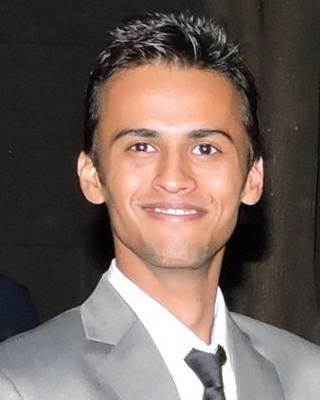

Ashutosh Mishra
email@ashutoshmishra.me
+91-9599744533
Skills
LANGUAGES: Java, C, C++, Python, MATLAB
TECHNOLOGIES: Elasticsearch, Solr, Redis, Play Framework, MongoDB, Lucene, RabbitMQ, Cleo, Amazon AWS, Git, prior experience in OpenCV, OpenMPI and OpenGL
OPERATING SYSTEMS: Linux (or any POSIX compliant OS), Windows
UNDERGRAD RESEARCH: Image Processing, Machine Vision, Stereo Vision, Machine Learning, Cortical Algorithms, Hierarchical Temporal Memory, Deep Learning
TECHNOLOGIES: Elasticsearch, Solr, Redis, Play Framework, MongoDB, Lucene, RabbitMQ, Cleo, Amazon AWS, Git, prior experience in OpenCV, OpenMPI and OpenGL
OPERATING SYSTEMS: Linux (or any POSIX compliant OS), Windows
UNDERGRAD RESEARCH: Image Processing, Machine Vision, Stereo Vision, Machine Learning, Cortical Algorithms, Hierarchical Temporal Memory, Deep Learning
Work experience
Gwynnie Bee November 2015 — Present
Software DeveloperThinqur June 2015 — September 2015
Attempt at starting upThinqur is an online portal where people could conduct social polls and vote on questions posted by people in a fun and engaging way. (http://thinqur.com)+ Developed entire backend API.
+ Handled Devops.
+ Worked on various technologies like MongoDB, Play Framework, RabbitMQ, Redis, Google Analytics, AWS, Codedeploy.
+ Also worked on UX, UI design, logo design.
+ Languages used: Java and Python
Right Relevance Inc. September 2014 — July 2015
SDEWorked on various technologies like Solr, Elasticsearch, Redis, MongoDB, Cleo, RabbitMQ and focused mainly on improving the search experience of users and REST APIs.Also owned and managed various backend services:
+ Owned search APIs.
+ Implemented/Owned email digest generation service.
+ Owned user's homefeeds generation
+ Owned Search recall and relevance.
+ Owned website traffic analytics.
+ Speed optimisation of various services like user's homefeeds and email digest generation
+ Implemented/Owned online query autocompletion service (using elasticsearch) to guide the user in relevant results space.
+ Implemented synonym expansion custom plugin for Solr to improve search recall.
+ Languages used: Java and Python
Right Relevance Inc. June 2014 — August 2014
Software ConsultantWorked on search relevance and recall.+ Implemented custom scoring logic over Solr for better ranking.
+ Worked on query autocomplete service (using LinkedIn's OSS Cleo).
+ Worked on improving search relevance and recall.
Robotics and Machine Intelligence Lab (DTU) November 2011 — May 2014
MemberWorked on various projects in Computer Vision and Machine Intelligence:+ MAJOR PROJECT 2: Modelling the motions and gestures of a human hand precisely using RGB-D sensor
+ MAJOR PROJECT: Parsing Natural Scenes using Deep Learning Approach
+ Interactive 3D display - Converted 2D display to 3D display by tracking head movements.
+ Kinect based Autonomous Quadcopter
+ Came 7th (out of over 200 teams nationwide) in Freescale Cup 2012 (IISC Bangalore)
+ Skin Color Detector + Face Tracker + Hand Tracker
+ Biometric Authentication Using Infrared Imaging of Hand Vein Patterns
+ Color Based Stereo Correspondence algorithm with Adaptive Local Support
+ Software to allow users to use hand gestures to perform mouse clicks.
Hitech Robotic Systemz Ltd. June 2013 — July 2013
Internship- Developed protocol for communication between Robots and PC.
- Developed GUI to remotely control the robots.
Education
B.Tech in Computer Science and Engineering August 2010 — June 2014
Delhi Technological UniversityCPI: 68.05 %Intermediate (CBSE board) July 2008 — June 2010
Somerville SchoolPercentage: 83 %High School (ICSE board) July 2006 — June 2008
Jyoti Niketan SchoolPercentage: 92 %Undergrad Research
STEREO VISION (RESEARCH PAPER)
Co-authored a Research paper titled "Color Based Stereo Correspondence algorithm with Adaptive Local Support" which was selected for presentation in The 2013 International Conference on Image Processing, Computer Vision, and Pattern Recognition (IPCV'13), Las Vegas, USA. and The 2013 IEEE Symposium Series on Computational Intelligence (IEEE SSCI'13), Singapore and for publication in corresponding conference proceedings.
Co-authored a Research paper titled "Color Based Stereo Correspondence algorithm with Adaptive Local Support" which was selected for presentation in The 2013 International Conference on Image Processing, Computer Vision, and Pattern Recognition (IPCV'13), Las Vegas, USA. and The 2013 IEEE Symposium Series on Computational Intelligence (IEEE SSCI'13), Singapore and for publication in corresponding conference proceedings.
References
Sumit Taank, Co-Founder and former CEO, Right Relevance Inc.
(currently Engineering Manager at Facebook)
Email: staank@gmail.com
Mr. Rajesh Rohilla, Associate Professor, Delhi Technological University
Email: rajesh@dce.ac.in
(currently Engineering Manager at Facebook)
Email: staank@gmail.com
Mr. Rajesh Rohilla, Associate Professor, Delhi Technological University
Email: rajesh@dce.ac.in